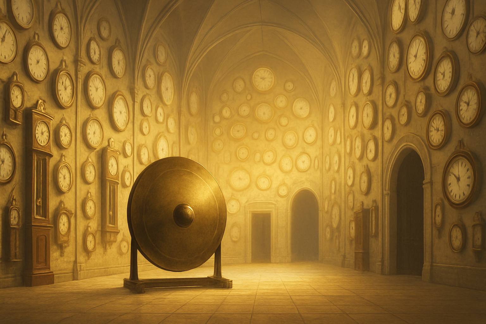

Unter der Werkbank entdeckst du ein riesiges Labor. An allen Wänden reihen sich Tische mit verschiedenen Mysteriösen Gegenständen darauf. Du nährst dich einem der Tische. Darauf liegt ein seltsamer Mechanismus, halb Uhr, halb Organisch. Er pulsiert schwach wie ein Herz. Du nimmst ihn in die Hand und ein seltsames Gefühl durströmt dich. Du siehst dich weiter im Raum um. Auf der einen Seite ist eine klemmende Tür, auf der anderen entdeckst du einen schmalen Schacht,
